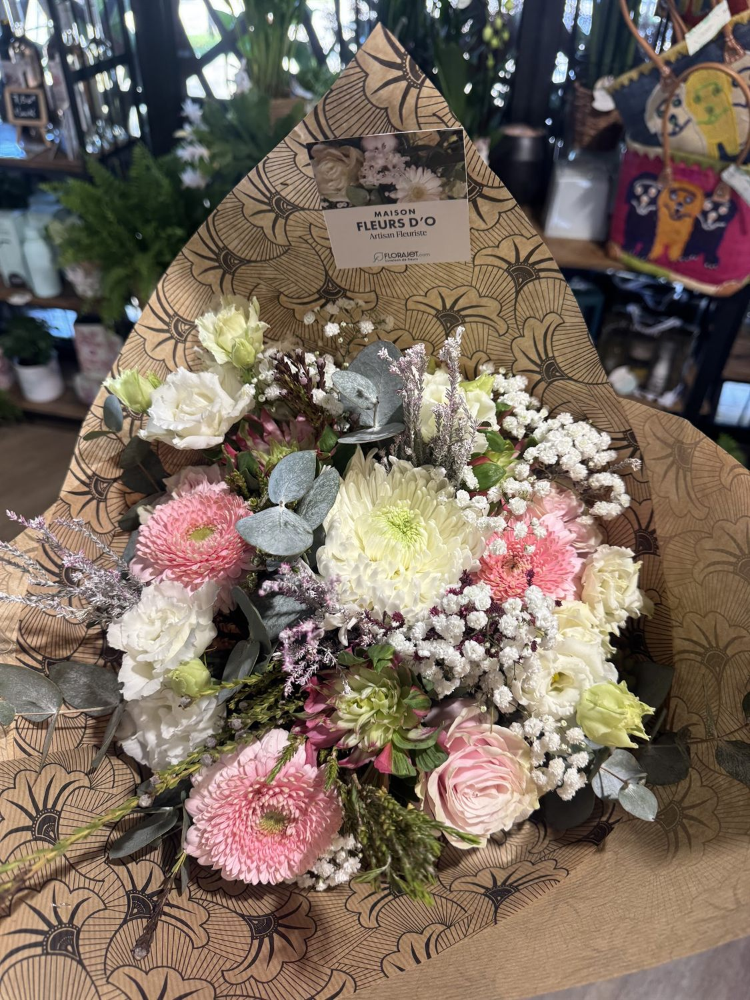
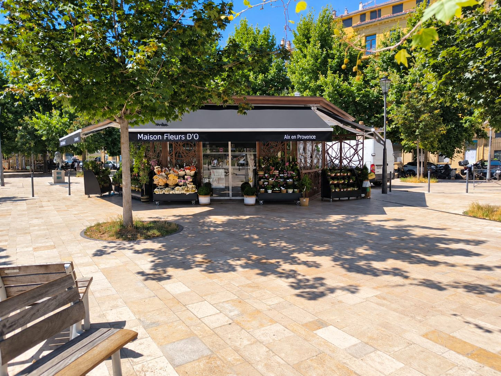
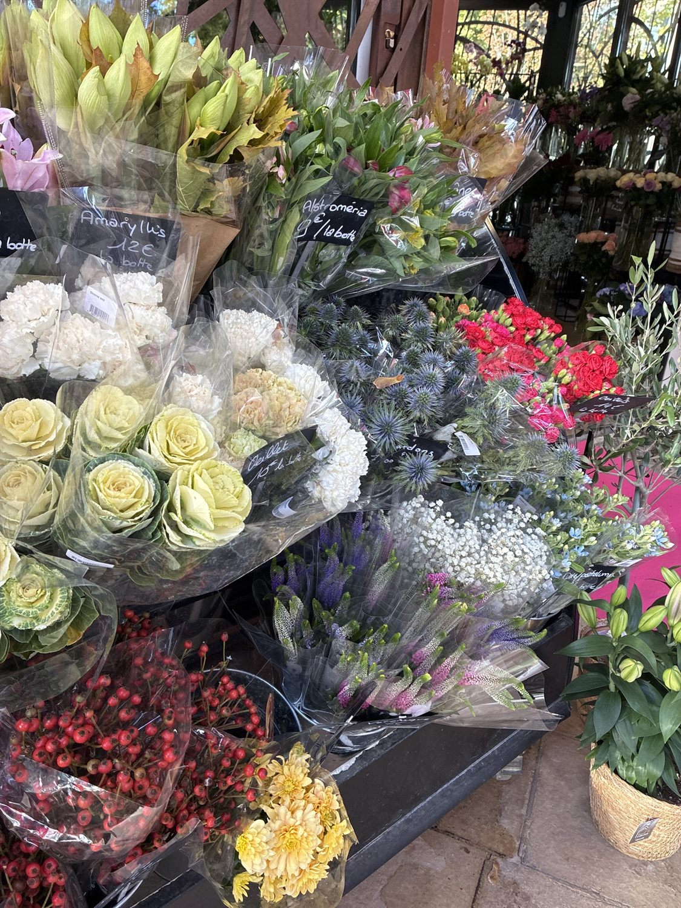
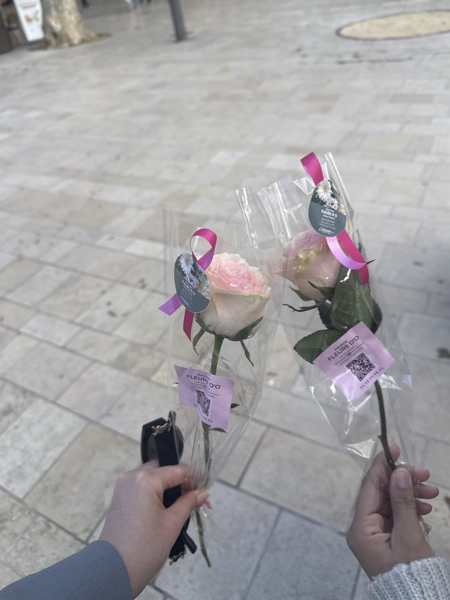
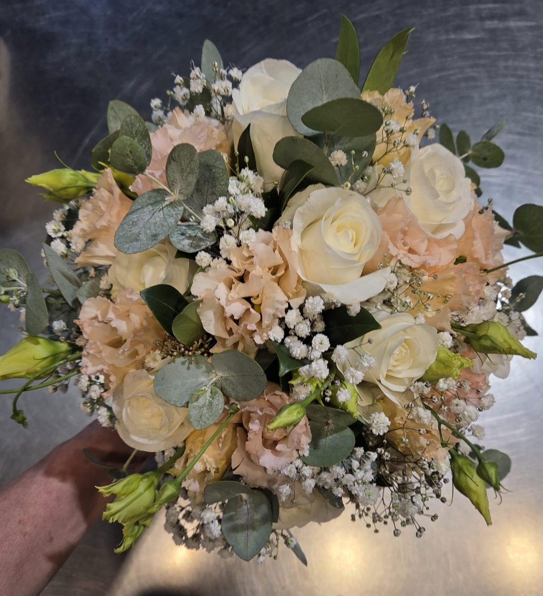
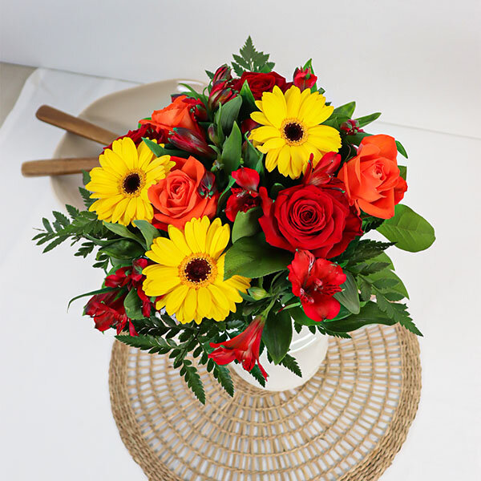
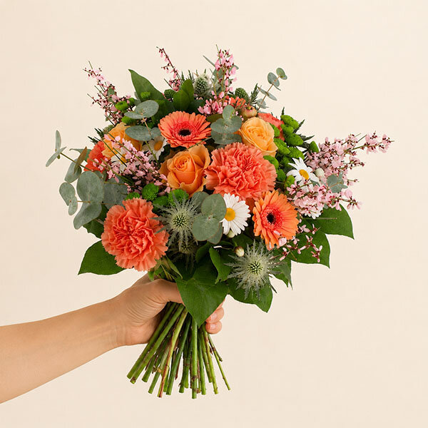
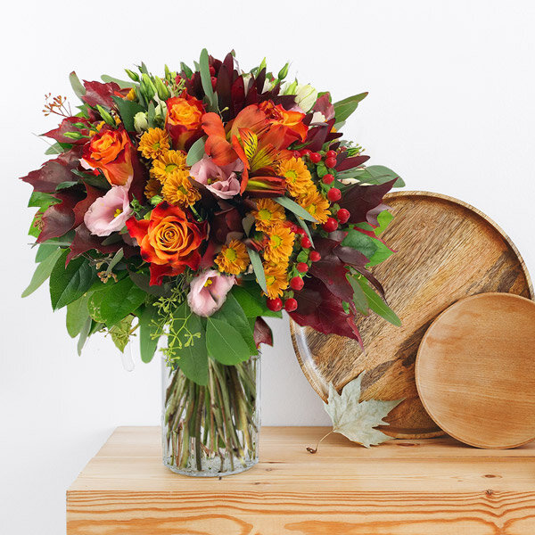
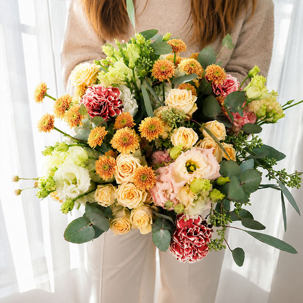
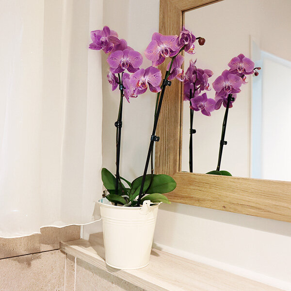

Le bouquet du fleuriste
Composé sur place selon vos goûts et votre budget, emballé dans le papier kraft de la maison.
dès 18,50 €*
RéserverFleuriste · Place Jeanne d’Arc · Aix-en-Provence
Roses du matin, bouquets composés sous vos yeux, papier kraft et petit mot : le fleuriste de la place Jeanne d’Arc, à deux pas de la Rotonde.
Le kiosque
Place Jeanne d’Arc, à deux pas de la Rotonde : un kiosque de bois clair et d’acier ajouré. Dès 9h30, le rideau se lève, les seaux sortent sur la place et les roses prennent le soleil d’Aix.
Roses, chardons bleus, gypsophile, baies rouges… les étals débordent et changent avec les saisons. Ici, on choisit ses fleurs une à une, ou on se laisse conseiller.
On assemble sous vos yeux, on ajuste jusqu’à ce que ça vous ressemble, puis on emballe dans le papier kraft. Un bouquet, ça se règle à la tige près.
Une rose à l’unité avec sa petite carte, un bouquet pour l’anniversaire de mamie, et même un seau d’eau pour que tout tienne jusqu’au moment d’offrir.



Nos créations
Faits main au kiosque, ou choisis dans la sélection du moment pour un retrait ou une livraison : faites défiler, puis réservez celui qui vous plaît.

Composé sur place selon vos goûts et votre budget, emballé dans le papier kraft de la maison.
dès 18,50 €*
RéserverUne tige, un ruban, une petite carte. Le plus simple des gestes, le plus joliment emballé.
Prix en boutique
Réserver
Roses, lisianthus, gypsophile : un bouquet romantique, dosé selon l’occasion et le budget.
Selon budget
Réserver
Gerberas solaires, roses rouges et feuillages : un bouquet qui met de bonne humeur.
dès 35,90 €**
Réserver
Orangés, chardons et brins légers : les couleurs de la saison dans la main.
dès 38,90 €**
Réserver
Roses cuivrées, baies et feuillages bordeaux : un bouquet de caractère.
dès 39,90 €**
Réserver
Le grand format, pêche et crème, généreux et lumineux. Pour marquer le coup.
52,90 €**
Réserver
Un cadeau qui dure : deux branches de phalaenopsis dans leur cache-pot.
29,90 €**
RéserverUne autre idée en tête ?
Composer ma réservation * Tarif relevé dans un avis client (bouquet composé sur place). ** Prix indicatifs de la sélection en ligne, susceptibles de varier : la boutique confirme à la réservation.Ce qu’on fait ici
En chiffres
0
note moyenne sur Google
0
avis clients Google
0/7
jours d’ouverture, dimanche compris
0h
livraison express possible via Florajet
Galerie
Très joli kiosque, avec un accueil souriant et chaleureux. Les fleuristes ont été très agréables et à l’écoute. Les prix sont abordables au regard de la qualité du service et des fleurs proposées. On s’y sent bien et ça donne vraiment envie d’y revenir.
Très bien accueilli par Louise et Florence, beaucoup de choix et des compositions faites avec goût. Merci !
Anne-Lise et Florence sont très sympathiques et de bon conseil. Florence m’a fait un magnifique bouquet, merci !
Très gentille. Ouvert le lundi, j’ai pu composer mon bouquet et elle a pu me donner un seau d’eau pour que les fleurs restent hydratées le temps de les offrir. 18,50 € pour ce sublime bouquet.
Un grand merci à Alex et Florence pour leur accueil chaleureux, leur gentillesse et leurs précieux conseils ! On sent qu’ils aiment leur métier et qu’ils mettent du cœur dans ce qu’ils font. Les fleurs sont magnifiques et le service est au top. Je recommande les yeux fermés, allez-y sans hésiter !
Réserver
Dites-nous l’occasion, le jour et le budget : on prépare, vous passez le prendre ou on le livre à Aix et aux Milles. Deux minutes, sans compte à créer.
Nous trouver
| Lundi | 9h30 – 19h30 |
|---|---|
| Mardi | 9h30 – 19h30 |
| Mercredi | 9h30 – 19h30 |
| Jeudi | 9h30 – 19h30 |
| Vendredi | 9h30 – 20h00 |
| Samedi | 9h30 – 20h00 |
| Dimanche | 9h30 – 13h00 |
Horaires susceptibles de varier les jours fériés.
Bon à savoir
Remplissez le formulaire de réservation (deux minutes) : occasion, jour et heure de retrait, budget, couleurs. Vous obtenez un récapitulatif avec une référence, prêt à être transmis à la boutique en un clic, et ajouté à votre agenda si vous le souhaitez.
Oui, à Aix-en-Provence et aux Milles. Pour les livraisons rapides, y compris le dimanche en 3 h, la boutique s’appuie sur le réseau Florajet. Indiquez l’adresse dans votre réservation : la boutique confirme la faisabilité et le tarif.
Oui, 7j/7 : 9h30–19h30 du lundi au jeudi, 9h30–20h le vendredi et le samedi, 9h30–13h le dimanche. Les jours fériés, les horaires peuvent varier.
Bien sûr. Choisissez vos fleurs une à une sur l’étal, l’équipe compose et emballe sous vos yeux. Des bouquets DIY, à composer chez soi, sont aussi proposés.
Des plantes (orchidées, oliviers en pot…), des fleurs séchées et quelques petites attentions pour accompagner le bouquet : chocolats, bougies, douceurs.